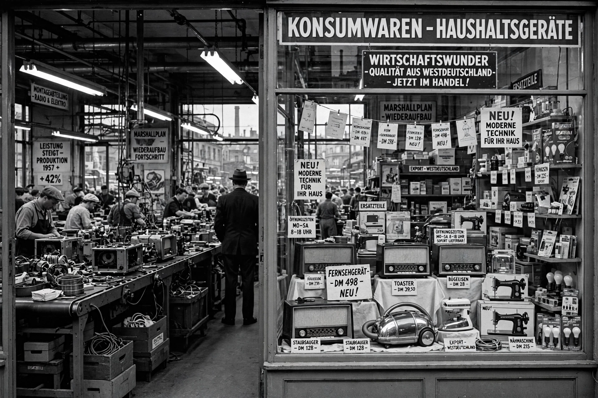

| Born | 4 February 1897, Fürth, German Empire |
|---|---|
| Died | 5 May 1977, Bonn, West Germany |
| Chancellor of West Germany | 1963–1966 |
| Minister of Economic Affairs | 1949–1963 |
| Party | Christian Democratic Union (CDU) |
Ludwig Wilhelm Erhard (1897–1977) was a German politician affiliated with the CDU and the second Chancellor of the Federal Republic of Germany (West Germany) from 1963 to 1966. As Minister of Economic Affairs under Konrad Adenauer from 1949, he is celebrated as the father of the soziale Marktwirtschaft (social market economy) and of West Germany's post-war "economic miracle", the Wirtschaftswunder.
In June 1948, as director of the economic administration of the Bizone, Erhard — on his own authority and on the day of the currency reform — abolished most Nazi-era price controls and rationing. Despite widespread scepticism, the reforms unleashed rapid growth: industrial production surged, shortages vanished, and West German living standards rose dramatically through the 1950s.
Succeeding Adenauer in October 1963, Erhard won the 1965 federal election but struggled with coalition tensions, a cooling economy, and disputes over relations with France and the United States. He resigned at the end of 1966 and was succeeded by Kurt Georg Kiesinger at the head of a grand coalition.